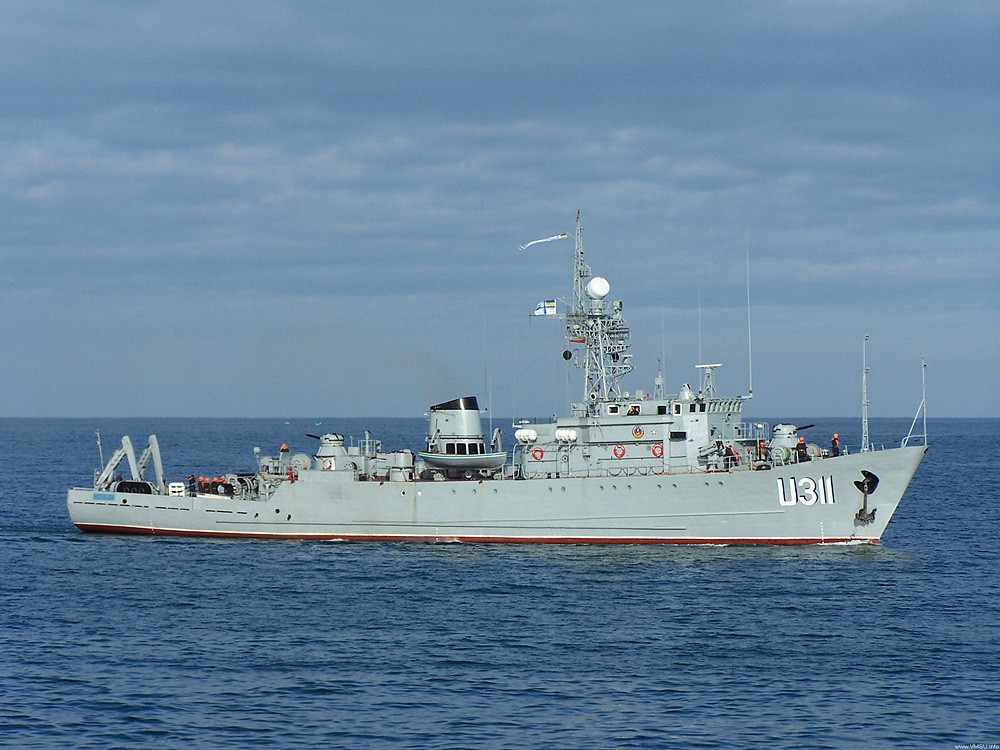
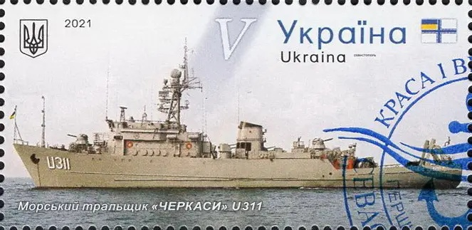

«Черкаси» (U-311) — морський тральщик проекту 266М (шифр «Аквамарин», англ. Natya class за класифікацією НАТО) корабель протимінної оборони морської зони Військово-Морських Сил України. У ВМФ СРСР мав назву «Развєдчик».
Проект 266М — модернізація тральщиків проекту 266 — спеціалізованих кораблів, призначених для виконання завдань протимінної оборони загонів бойових кораблів, конвоїв, окремих кораблів і суден у морській і ближній океанській зонах через пошук та виявлення морських якірних і донних мін, їх тралення та знищення. Крім того, ці кораблі були пристосовані для постановки активних і оборонних мінних загороджень.
У 1965 році тактико-технічне завдання на розробку проекту тральщиків 266М отримало Західне проектно-конструкторське бюро.
Новий проект відрізнявся від попередника досконалішим протимінним озброєнням: замість електромагнітного тралу він був оснащений глибоководним тралом з апаратурою керування, тралом для знищення активних мін, телевізійним і комплексним шукачами мін, які тягнуться за судном, гідроакустичною станцією «Мезень», яка забезпечує виявлення донних мін. Облаштування в кормовій частині корабля сліпа забезпечило механізацію постановки і вибирання тралів. Використання сучасних слабомагнітних матеріалів корпусу, сучасних на той час конструктивних рішень для проектування рушійної установки, дозволили знизити до мінімуму власні акустичні поля корабля. Крім того, на нових тральщиках встановлювалися засоби ПЧО — дві РБУ-1200[1][2].Морські тральщики проекту 266М будувалися Середньоневським і Хабаровським суднобудівними заводами в 1970–1978 роках. Усього було побудовано 31 корабель даного типу[3].
25 липня 1997 року увійшов у склад. Військово-Морських Сил України, де отримав назву «Черкаси» на честь однойменного українського міста з присвоєнням бортового номера U311. Корабель неодноразово брав участь у різних міжнародних навчаннях, зборах-походах кораблів ВМС України, активаціях ЧВМГ БЛЕКСІФОР[6]. Корабель базувався в пункті базування Новоозерне.
Під час Російського вторгнення в Україну перебував на озері Донузлав. 6 березня 2014 року на виході з бухти Донузлав було затоплено два російські кораблі «Очаков» і «Шахтёр», 7 березня було затоплено ще одне судно, а 13 березня було затоплено четверте списане судно. Таким чином було створено барикаду, що заблокувала вихід з бухти кораблям Військово-Морських Сил України. Після початку тимчасової анексії Криму, 20 березня російські військові висунули ультиматум українським військовим про перехід на бік Росії. 21 березня написали рапорт на звільнення й зійшли з корабля 2 офіцери, один мічман і 9 людей особового складу. Екіпаж корабля відмовився виконати вимоги російських військових та здійснив спробу вирватися з Донузлава під пісню «Врагу не сдаётся наш гордый „Варяг“». Проте спроба була невдалою і корабель став на якір, щоб не сісти на мілину. Після цього корабель став тримати кругову оборону[7]. 23 березня екіпаж здійснив повторну спробу прорвати блокаду. Корабель спробував пройти поміж двох затоплених російських кораблів. «Черкасам» це майже вдалося, однак до них підійшов російський катер і вдарив у бік. Після цього носова частина «Черкас» опинилася на мілині[8]. 24 березня після захоплення російськими військовими корабля «Костянтин Ольшанський» «Черкаси» залишався єдиним військовим кораблем на Донузлаві під українським прапором. 25 березня ввечері російські військові захопили корабель. Штурм здійснювався за допомогою двох вертольотів Мі-35 та трьох швидкісних катерів. Він тривав понад дві години[9]. Станом на лютий 2020-го, викрадений корабель було пришвартовано російськими військовими в бухті Стрілецька в тимчасово окупованому Севастопол
